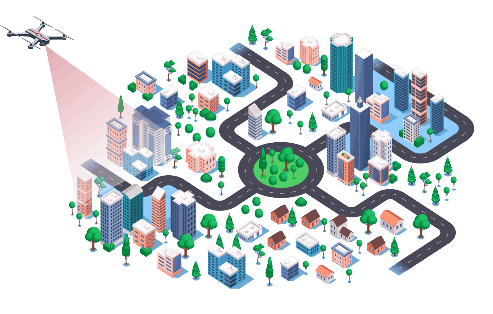
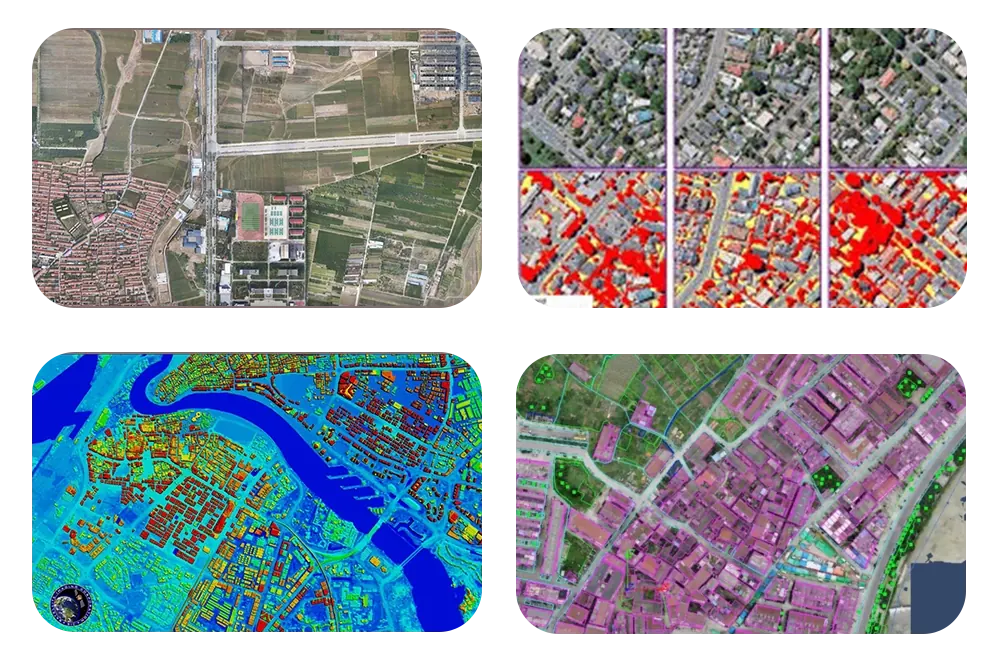
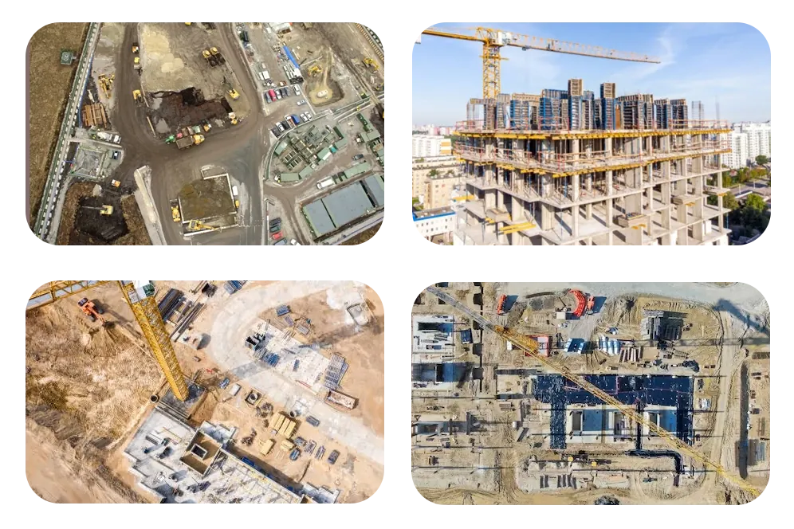
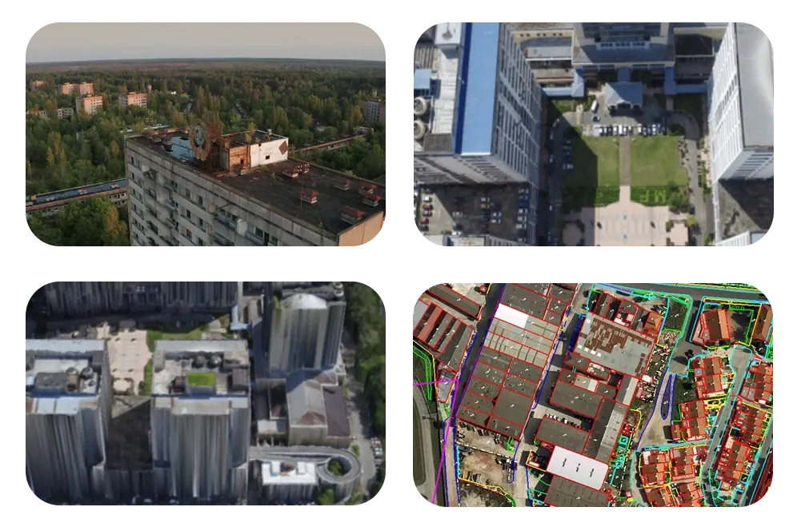
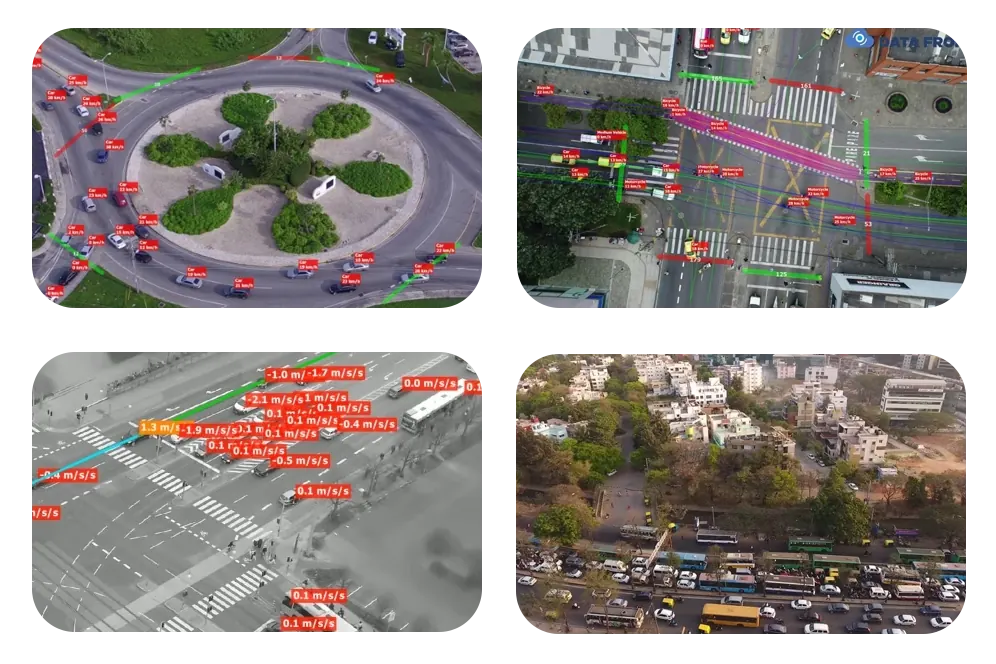
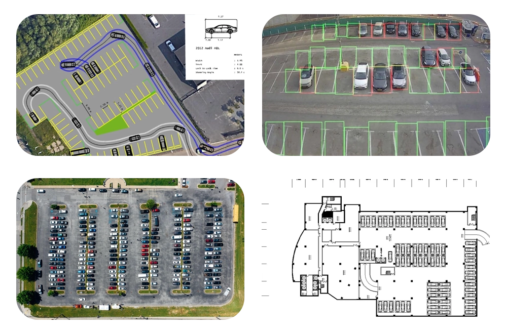
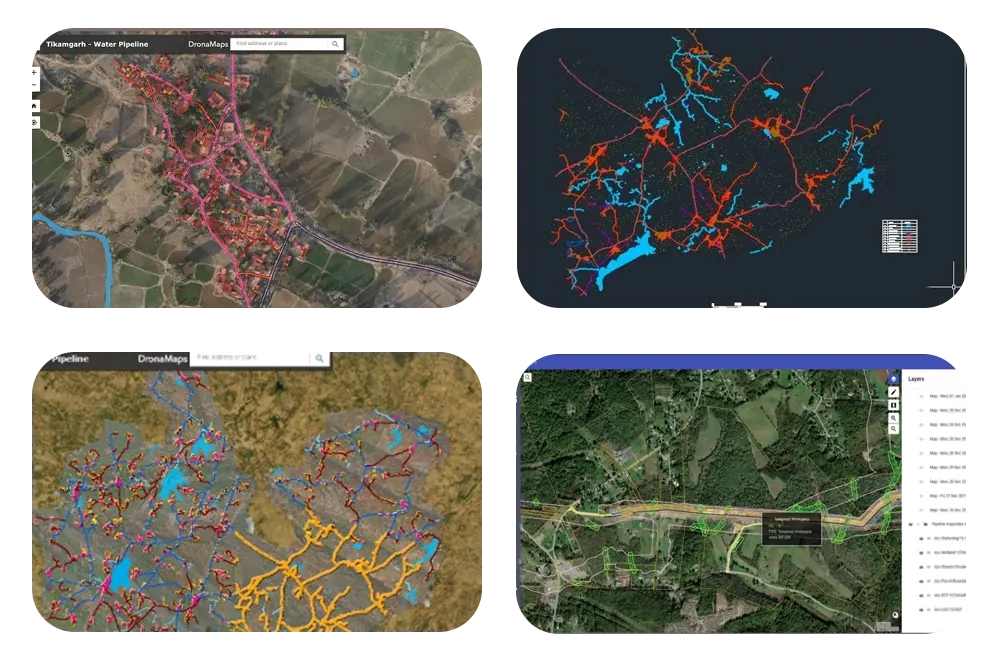

Drone Survey for Urban Planning and Construction


Aerial mapping
Our drones use high-resolution sensors and cameras to collect aerial photographs and geographic data quickly. From this we produce 3D models and land use and land cover maps, map urban sprawl, assess infrastructure needs and evaluate terrain.
We give planners detailed terrain models and 3D reconstructions showing topography, vegetation and buildings. Panoramic photos and aerial films help architects and designers understand project sites and develop their designs.
- High-resolution sensors and cameras for fast aerial data collection.
- 3D models, land use and land cover maps, and terrain evaluation.
- Terrain models and 3D reconstructions for urban planning.
- Panoramic photos and aerial films to help architects and designers understand sites.
Aerial Inspection
Construction site monitoring
Our drones fly construction sites at regular intervals, capturing photographs and video. Project teams use this to track progress and work quality and to deal with problems on time. The overhead view gives a fuller picture of the structure and site, supporting quality and safety.
- Regular drone flights capture photographs and video of construction sites for ongoing monitoring.
- Enables project teams to track building progress, assess work quality, and address concerns promptly.
- The overhead view shows the structure and overall site status, supporting quality and safety checks.
- Problems can be spotted and fixed before they grow.
- Provides stakeholders with up-to-date visual documentation of construction activities and milestones.
- Gives all project teams a shared view of the whole site.


Building inspection and maintenance
Traditional building inspections and maintenance are time-consuming and risky. Our drone service performs external inspections and captures high-definition photographs or videos without requiring direct human access to hazardous locations. Our non-contact inspection technology increases not just safety but also efficiency and accuracy. Drones can also be used to monitor the structural health of buildings, providing valuable information for maintenance planning.
- Drones inspect building exteriors, so staff do not need to access hazardous locations.
- High-definition photographs and videos captured by drones provide detailed visual documentation for inspection purposes.
- Non-contact inspection technology enhances safety, efficiency, and accuracy of building inspections.
- Drones monitor structural health, detecting potential issues such as cracks, corrosion, or structural weaknesses.
- Inspection data supports planned, preventive maintenance.
- Finding issues early improves building safety and reduces maintenance costs.
Transportation improvement for Urban Centers
Expanding infrastructure alternatives is one of the feasible methods of transportation planning. Traditional traffic monitoring technologies use tower-mounted cameras and sensors, but they need to be done more quickly. They also do not account for less-travelled routes. In comparison, our drone services are faster and more efficient in a variety of ways.
Traffic flow analysis
Our urban design and transportation planning service is most useful when conducting real-time observations during rush hour. Planners can use their data to make adjustments that increase rider and pedestrian safety. We offer drone imagery and data to help urban planners create accurate models and simulations of suggested modifications. Our drone-generated data frequently outperforms traditional 2D maps in quality.
- Rush-hour observations give planners data for urban design and transport planning.
- Drone imagery helps planners make changes that improve rider and pedestrian safety.
- Drone data supports accurate models and simulations of proposed changes to urban infrastructure.
- Drone data is often more detailed than traditional 2D maps.
- More detailed data leads to better-founded planning decisions and simulations.


Parking space planning
Inefficient parking disrupts traffic flow, a serious problem in metropolitan areas. We help city planners and architects make better decisions on urban design and transport planning. Our aerial imagery is processed into virtual models that account for parking occupancy as well as date and time.
- Aerial imagery shows parking occupancy, helping planners and architects with urban design and transport planning.
- Aerial imagery is processed into virtual models for visualisation and analysis.
- The models account for parking occupancy, date and time.
- Accounting for changes in demand over time helps planners manage parking and reduce congestion.
- Decisions based on aerial imagery and virtual models lead to more efficient urban mobility.
Utility network and planning
We map water pipelines quickly and accurately by drone. High-resolution cameras and LiDAR capture aerial imagery and topographic data that help identify issues and plan maintenance. Drones reach remote terrain without disrupting the network, improving the management of water systems.
Sewage mapping uses aerial imagery and data to locate sewage infrastructure, monitor wastewater flow, detect leaks and assess system condition. Urban planners and environmental agencies use it to manage sewage networks, prioritise maintenance and reduce environmental risk.
We survey urban areas by drone to find drainage problems. Aerial imagery shows areas prone to flooding or poor drainage, and LiDAR elevation data supports the design of drainage infrastructure. Drone monitoring during extreme weather shows how well drainage is working, helping reduce flood risk.

Our Features
Expertise in Urban Data Analysis
We bring urban planning and data analysis knowledge to each project, tailored to its development needs.
Our urban planners, GIS specialists and drone pilots work together on urban landscapes, infrastructure and development projects.
Advanced Drone Technology
We fly DJI and custom-built drones for urban mapping, surveying and analysis.
Our drones capture high-resolution imagery, LiDAR data, and thermal imaging, providing detailed information on land use, building structures, and transportation networks.

Efficiency and Cost-Effectiveness
Drone surveys for urban planning are more efficient and economical than traditional methods. They speed up data collection, shorten project timelines and reduce manual survey work, lowering costs for clients.
Sustainable Urban Development
We support urban development that is sustainable, resilient and inclusive.
Our survey data supports decisions on urban design, transport planning and environmental management.
Clientele
Clientele
Frequently asked questions
How do drones help urban planning?
Drones create up-to-date, high-resolution base maps and 3D models of towns quickly. Planners use them for master plans, property mapping, utilities and monitoring growth.
Can drone maps be used for property and land records?
Yes. A georeferenced orthomosaic shows building footprints and boundaries clearly and can be combined with GIS records.
How is construction progress tracked with drones?
The site is flown at regular intervals and each survey is compared with the previous one and with the design, giving a visual and measured record of progress.
Do drone flights in cities need permission?
Yes. Flights must follow India's drone rules and airspace zones; flights in yellow or red zones need prior permission. Survey plans are made around these limits.